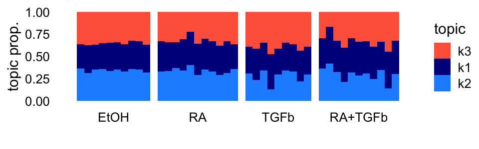
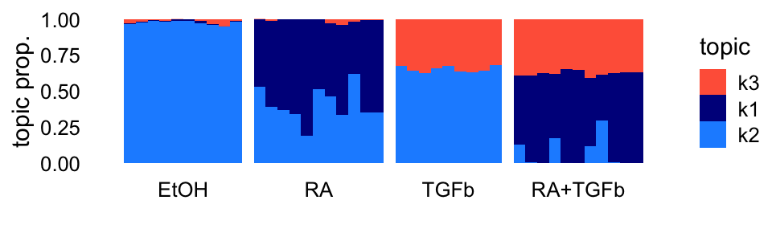
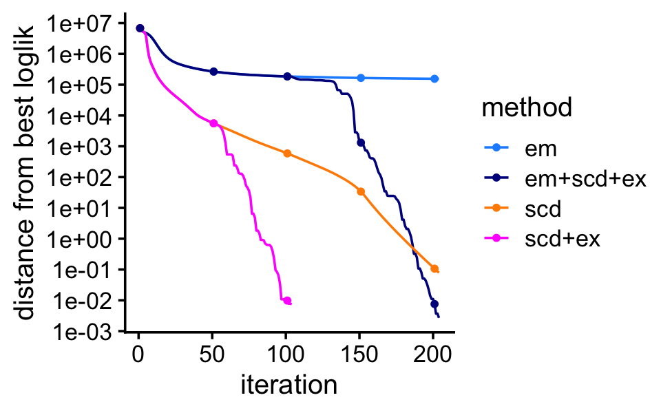
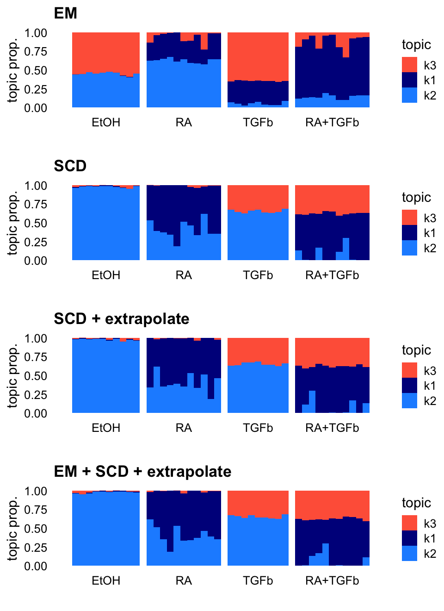

Last updated: 2025-06-25
Checks: 6 1
Knit directory:
fastTopics-experiments/analysis/
This reproducible R Markdown analysis was created with workflowr (version 1.7.1). The Checks tab describes the reproducibility checks that were applied when the results were created. The Past versions tab lists the development history.
Great! Since the R Markdown file has been committed to the Git repository, you know the exact version of the code that produced these results.
Great job! The global environment was empty. Objects defined in the global environment can affect the analysis in your R Markdown file in unknown ways. For reproduciblity it’s best to always run the code in an empty environment.
The command set.seed(1) was run prior to running the
code in the R Markdown file. Setting a seed ensures that any results
that rely on randomness, e.g. subsampling or permutations, are
reproducible.
Great job! Recording the operating system, R version, and package versions is critical for reproducibility.
To ensure reproducibility of the results, delete the cache directory
mcf7_cache and re-run the analysis. To have workflowr
automatically delete the cache directory prior to building the file, set
delete_cache = TRUE when running wflow_build()
or wflow_publish().
Great job! Using relative paths to the files within your workflowr project makes it easier to run your code on other machines.
Great! You are using Git for version control. Tracking code development and connecting the code version to the results is critical for reproducibility.
The results in this page were generated with repository version 05adfb4. See the Past versions tab to see a history of the changes made to the R Markdown and HTML files.
Note that you need to be careful to ensure that all relevant files for
the analysis have been committed to Git prior to generating the results
(you can use wflow_publish or
wflow_git_commit). workflowr only checks the R Markdown
file, but you know if there are other scripts or data files that it
depends on. Below is the status of the Git repository when the results
were generated:
Ignored files:
Ignored: analysis/.sos/
Ignored: data/20news-bydate/
Ignored: data/droplet.RData
Ignored: data/nips_1-17.mat
Ignored: data/pbmc_68k.RData
Ignored: output/droplet/fits-droplet.RData
Ignored: output/droplet/lda-droplet.RData
Ignored: output/newsgroups/de-newsgroups.RData
Ignored: output/newsgroups/fits-newsgroups.RData
Ignored: output/newsgroups/lda-newsgroups.RData
Ignored: output/newsgroups/rds/
Ignored: output/nips/fits-nips.RData
Ignored: output/nips/lda-nips.RData
Ignored: output/pbmc68k/rds/
Untracked files:
Untracked: .DS_Store
Untracked: analysis/lda-eb-newsgroups-em-k=10.rds
Untracked: analysis/lda-eb-newsgroups-scd-ex-k=10.rds
Untracked: analysis/lda-newsgroups-em-k=10.rds
Untracked: analysis/lda-newsgroups-scd-ex-k=10.rds
Untracked: analysis/maptpx-newsgroups-em-k=10.rds
Untracked: analysis/maptpx-newsgroups-scd-ex-k=10.rds
Untracked: analysis/mcf7_cache/
Untracked: analysis/mcf7_progress_plot.pdf
Untracked: analysis/mcf7_structure_plots.pdf
Untracked: plots/
Note that any generated files, e.g. HTML, png, CSS, etc., are not included in this status report because it is ok for generated content to have uncommitted changes.
These are the previous versions of the repository in which changes were
made to the R Markdown (analysis/mcf7.Rmd) and HTML
(docs/mcf7.html) files. If you’ve configured a remote Git
repository (see ?wflow_git_remote), click on the hyperlinks
in the table below to view the files as they were in that past version.
| File | Version | Author | Date | Message |
|---|---|---|---|---|
| Rmd | 05adfb4 | Peter Carbonetto | 2025-06-25 | wflow_publish("mcf7.Rmd", verbose = T, view = F) |
| Rmd | 727d65c | Peter Carbonetto | 2025-06-25 | Added more structure plots to the mcf7 example. |
| Rmd | 092a881 | Peter Carbonetto | 2025-06-25 | Added the relative logliks to the mcf7 example. |
| Rmd | 8a1835c | Peter Carbonetto | 2025-06-25 | Improved the progress plot in the mcf7 analysis. |
| Rmd | 94ffd45 | Peter Carbonetto | 2025-06-24 | A couple small edits to the mcf7 example. |
| Rmd | 88ac4b7 | Peter Carbonetto | 2025-06-24 | I have a rough draft of the MCF-7 example; now I need to polish it up and put together nice figures. |
| html | 8791b26 | Peter Carbonetto | 2025-06-23 | Added link to the overview page. |
| Rmd | 30dff04 | Peter Carbonetto | 2025-06-23 | wflow_publish("index.Rmd") |
This will be the new in-depth example for the paper illustrating the differences in performance of the EM and SCD methods. See here for background on the MCF-7 data set, including steps taken to prepare the data.
First load the packages used in the code below:
library(fastTopics)
library(ggplot2)
library(cowplot)Set the seed to ensure that the results are reproducible:
set.seed(1)Load the MCF-7 data set and initial estimate of the topic proportions:
load("../data/mcf7.RData")
dim(counts)
# [1] 41 16773I obtain a “smart” initialization by running 4 EM iterations:
L <- L[,2:4]
control <- list(extrapolate = FALSE,numiter = 4,nc = 8)
fit0 <- init_poisson_nmf(counts,L = L,init.method = "random")
fit0 <- fit_poisson_nmf(counts,fit0 = fit0,numiter = 4,method = "em",
control = control,verbose = "none")This “smart” initialization will be used as the starting point for all the comparisons.
This is what the smart initialization looks like:
topic_colors <- c("darkblue","dodgerblue","tomato")
n <- nrow(samples)
p1 <- structure_plot(fit0,grouping = samples$label,topics = c(3,1,2),
colors = topic_colors,loadings_order = 1:n) +
labs(y = "topic prop.") +
theme(axis.text.x = element_text(angle = 0,hjust = 0.5))
print(p1)
Now let’s run the extrapolated SCD algorithm for a decently long time to obtain a high-quality fit:
control$extrapolate <- FALSE
fit_best <- fit_poisson_nmf(counts,fit0 = fit0,numiter = 100,method = "scd",
control = control,verbose = "none")
control$extrapolate <- TRUE
fit_best <- fit_poisson_nmf(counts,fit0 = fit_best,numiter = 200,
method = "scd",control = control,
verbose = "none")
Warning: The above code chunk cached its results, but
it won’t be re-run if previous chunks it depends on are updated. If you
need to use caching, it is highly recommended to also set
knitr::opts_chunk$set(autodep = TRUE) at the top of the
file (in a chunk that is not cached). Alternatively, you can customize
the option dependson for each individual chunk that is
cached. Using either autodep or dependson will
remove this warning. See the
knitr cache options for more details.
These are the max. residuals in the last iterations:
tail(fit_best$progress$res,n = 4)
# [1] 0.1081849 0.1081849 0.1081849 0.1011945Here’s what the topic model looks like:
p2 <- structure_plot(fit_best,grouping = samples$label,topics = c(3,1,2),
colors = topic_colors,loadings_order = 1:n) +
labs(y = "topic prop.") +
theme(axis.text.x = element_text(angle = 0,hjust = 0.5))
print(p2)
Fit the topic model by performing EM updates or SCD updates, with or without extrapolation.
control$extrapolate <- FALSE
fit_em <- fit_poisson_nmf(counts,fit0 = fit0,numiter = 100,method = "em",
control = control,verbose = "none")
fit_scd <- fit_poisson_nmf(counts,fit0 = fit0,numiter = 200,method = "scd",
control = control,verbose = "none")
fit_scd_ex <- fit_poisson_nmf(counts,fit0 = fit0,numiter = 50,method = "scd",
control = control,verbose = "none")
control$extrapolate <- TRUE
fit_scd_ex <- fit_poisson_nmf(counts,fit0 = fit_scd_ex,numiter = 50,
method = "scd",control = control,
verbose = "none")
fit_em_scd <- fit_poisson_nmf(counts,fit0 = fit_em,numiter = 100,
method = "scd",control = control,
verbose = "none")
control$extrapolate <- FALSE
fit_em <- fit_poisson_nmf(counts,fit0 = fit_em,numiter = 100,method = "em",
control = control,verbose = "none")
Warning: The above code chunk cached its results, but
it won’t be re-run if previous chunks it depends on are updated. If you
need to use caching, it is highly recommended to also set
knitr::opts_chunk$set(autodep = TRUE) at the top of the
file (in a chunk that is not cached). Alternatively, you can customize
the option dependson for each individual chunk that is
cached. Using either autodep or dependson will
remove this warning. See the
knitr cache options for more details.
This plot shows the improvement in the solution over time for the different methods:
progress_plot_colors <- c("dodgerblue","darkblue","darkorange","magenta")
ll_best <- tail(fit_best$progress$loglik.multinom,n = 1)
pdat <- rbind(cbind(fit_em$progress,data.frame(method = "em")),
cbind(fit_scd$progress,data.frame(method = "scd")),
cbind(fit_scd_ex$progress,data.frame(method = "scd+ex")),
cbind(fit_em_scd$progress,data.frame(method = "em+scd+ex")))
pdat <- transform(pdat,
loglik.multinom = ll_best - loglik.multinom,
method = factor(method))
pdat2 <- subset(pdat,iter %% 50 == 1)
p3 <- ggplot(pdat,aes(x = iter,y = loglik.multinom,color = method)) +
geom_line() +
geom_point(data = pdat2,size = 1) +
scale_y_continuous(trans = "log10",breaks = 10^seq(-3,7)) +
scale_color_manual(values = progress_plot_colors) +
labs(x = "iteration",y = "distance from best loglik") +
theme_cowplot(font_size = 12)
print(p3)
Compare the log-likelihoods obtained by the different methods (relative to the log-likelihood at the “high-quality” solution):
logliks <- c("initial" = sum(loglik_multinom_topic_model(counts,fit0)),
"em" = sum(loglik_multinom_topic_model(counts,fit_em)),
"scd" = sum(loglik_multinom_topic_model(counts,fit_scd)),
"scd+ex" = sum(loglik_multinom_topic_model(counts,fit_scd_ex)),
"em+scd+ex" = sum(loglik_multinom_topic_model(counts,fit_em_scd)))
ll_best - logliks
# initial em scd scd+ex em+scd+ex
# 4.995810e+06 1.551685e+05 7.850426e-02 7.498864e-03 2.696458e-03Compare the fit obtained by each method in Structure plots:
p4 <- structure_plot(fit_em,grouping = samples$label,topics = c(3,1,2),
colors = topic_colors,loadings_order = 1:n) +
labs(y = "topic prop.",title = "EM") +
theme(axis.text.x = element_text(angle = 0,hjust = 0.5))
p5 <- structure_plot(fit_scd,grouping = samples$label,topics = c(3,1,2),
colors = topic_colors,loadings_order = 1:n) +
labs(y = "topic prop.",title = "SCD") +
theme(axis.text.x = element_text(angle = 0,hjust = 0.5))
p6 <- structure_plot(fit_scd_ex,grouping = samples$label,topics = c(3,1,2),
colors = topic_colors) +
labs(y = "topic prop.",title = "SCD + extrapolate") +
theme(axis.text.x = element_text(angle = 0,hjust = 0.5))
p7 <- structure_plot(fit_em_scd,grouping = samples$label,topics = c(3,1,2),
colors = topic_colors) +
labs(y = "topic prop.",title = "EM + SCD + extrapolate") +
theme(axis.text.x = element_text(angle = 0,hjust = 0.5))
print(plot_grid(p4,p5,p6,p7,nrow = 4,ncol = 1))
Finally, save the key plots to PDF:
ggsave("mcf7_structure_plots.pdf",
plot_grid(p1 + ggtitle("initial"),
p2 + ggtitle("solution"),
p4,
p5,
nrow = 4,ncol = 1),
height = 5.5,width = 4)
ggsave("mcf7_progress_plot.pdf",p3,height = 2.5,width = 4)
sessionInfo()
# R version 4.3.3 (2024-02-29)
# Platform: aarch64-apple-darwin20 (64-bit)
# Running under: macOS 15.5
#
# Matrix products: default
# BLAS: /Library/Frameworks/R.framework/Versions/4.3-arm64/Resources/lib/libRblas.0.dylib
# LAPACK: /Library/Frameworks/R.framework/Versions/4.3-arm64/Resources/lib/libRlapack.dylib; LAPACK version 3.11.0
#
# locale:
# [1] en_US.UTF-8/en_US.UTF-8/en_US.UTF-8/C/en_US.UTF-8/en_US.UTF-8
#
# time zone: America/Chicago
# tzcode source: internal
#
# attached base packages:
# [1] stats graphics grDevices utils datasets methods base
#
# other attached packages:
# [1] cowplot_1.1.3 ggplot2_3.5.0 fastTopics_0.7-25
#
# loaded via a namespace (and not attached):
# [1] gtable_0.3.4 xfun_0.42 bslib_0.6.1
# [4] htmlwidgets_1.6.4 ggrepel_0.9.5 lattice_0.22-5
# [7] quadprog_1.5-8 vctrs_0.6.5 tools_4.3.3
# [10] generics_0.1.3 parallel_4.3.3 tibble_3.2.1
# [13] fansi_1.0.6 highr_0.10 pkgconfig_2.0.3
# [16] Matrix_1.6-5 data.table_1.17.4 SQUAREM_2021.1
# [19] RcppParallel_5.1.10 lifecycle_1.0.4 truncnorm_1.0-9
# [22] farver_2.1.1 compiler_4.3.3 stringr_1.5.1
# [25] git2r_0.33.0 textshaping_0.3.7 progress_1.2.3
# [28] munsell_0.5.0 RhpcBLASctl_0.23-42 httpuv_1.6.14
# [31] htmltools_0.5.8.1 sass_0.4.9 yaml_2.3.8
# [34] lazyeval_0.2.2 plotly_4.10.4 crayon_1.5.2
# [37] later_1.3.2 pillar_1.9.0 jquerylib_0.1.4
# [40] whisker_0.4.1 tidyr_1.3.1 uwot_0.2.3
# [43] cachem_1.0.8 gtools_3.9.5 tidyselect_1.2.1
# [46] digest_0.6.34 Rtsne_0.17 stringi_1.8.3
# [49] reshape2_1.4.4 dplyr_1.1.4 purrr_1.0.2
# [52] ashr_2.2-66 labeling_0.4.3 rprojroot_2.0.4
# [55] fastmap_1.1.1 grid_4.3.3 colorspace_2.1-0
# [58] cli_3.6.4 invgamma_1.1 magrittr_2.0.3
# [61] utf8_1.2.4 withr_3.0.2 prettyunits_1.2.0
# [64] scales_1.3.0 promises_1.2.1 rmarkdown_2.26
# [67] httr_1.4.7 workflowr_1.7.1 ragg_1.2.7
# [70] hms_1.1.3 pbapply_1.7-2 evaluate_1.0.3
# [73] knitr_1.45 viridisLite_0.4.2 irlba_2.3.5.1
# [76] rlang_1.1.5 Rcpp_1.0.12 mixsqp_0.3-54
# [79] glue_1.8.0 jsonlite_1.8.8 plyr_1.8.9
# [82] R6_2.5.1 systemfonts_1.0.6 fs_1.6.5